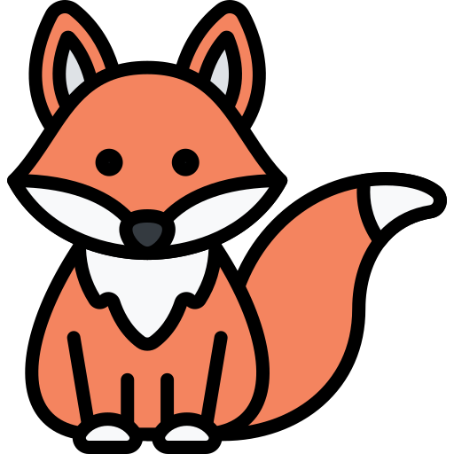
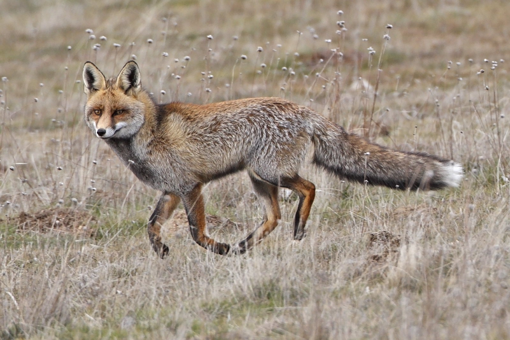
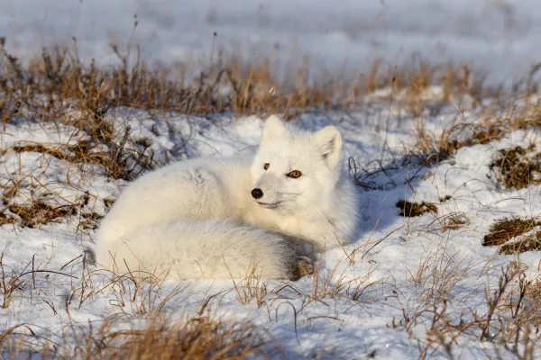
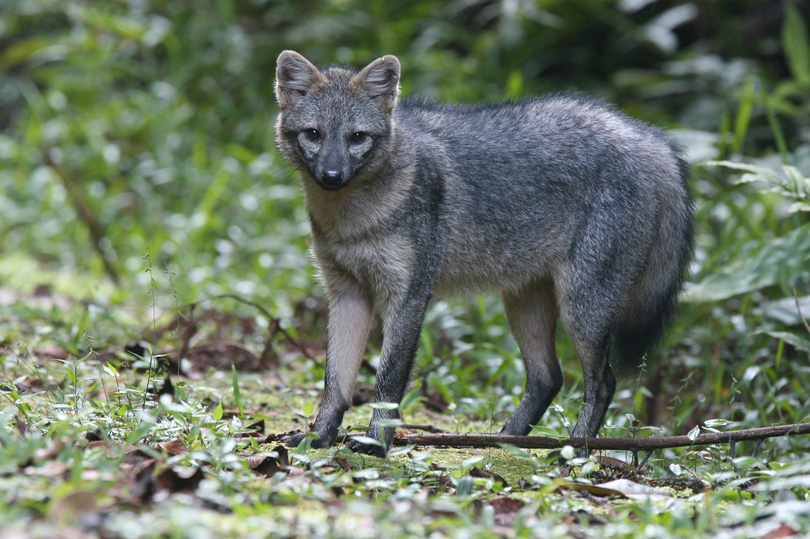

Tipos zorros
Bienvenido a nuestra página dedicada a los zorros. Estos increíbles animales, miembros de la familia de los cánidos y la tribu Vulpini, poseen características únicas que los hacen fascinantes para científicos y amantes de la naturaleza por igual. Acompáñanos mientras exploramos su intrigante comportamiento, adaptaciones únicas y diversidad de especies en diferentes hábitats. ¡Sumérgete en el mundo de los zorros con nosotros!
Fennec
Habita solamente en la península del Sinaí, en el desierto del Sahara. Está adaptado a las temperaturas superiores a 38 °C, y es la especie el zorro que más calor tolera. Suelen cavar madrigueras bajo suelo para enfriarse. Miden de 30 a 40 centímetros de largo, siendo de talla pequeña. Su pelaje es beige claro, que sirve para no retener el calor desértico y para pasar inadvertido en la arena de su entorno. Destacan también sus grandes orejas puntiagudas, que nuevamente, sirven como adaptación para enfriarse más fácilmente en un entorno de altas temperaturas.

Zorro común
También llamado zorro rojo, es un cazador y carroñero muy adaptable originario de todo el hemisferio norte global. Es el zorro que ocupa mayor área. A veces solamente se le denomina zorro por ser el más común. Las orejas son puntiagudas y negras, al igual que la parte inferior de las patas. El pelaje es denso, con una cola muy poblada con la punta blanca. El color del cuerpo es pardo a rojizo.
Zorro ártico
Mide de 50 a 75 centímetros de largo, y tiene un pelaje completamente blanco que le sirve para confundirse con la nieve de su entorno. Se distribuye en la franja más al norte de los continentes. Cuando pasa el invierno tornan a una tonalidad grisácea. Algunos especiales ejemplares llegan a ser azulados. Se alimentan principalmente de lemmings, pero también de aves y mamíferos pequeños. Complementan con carroña de grandes mamíferos, especialmente de osos polares. Finalmente, pueden consumir ciertos frutos, plantas y algas.
Zorro cangrejero
Vive en América del Sur, tanto en la zona tropical como en la templada, asociado a bosques, herbazales y zonas húmedas cercanas al mar. Es omnívoro, se alimenta de carroña, animales pequeños, y de frutos.
